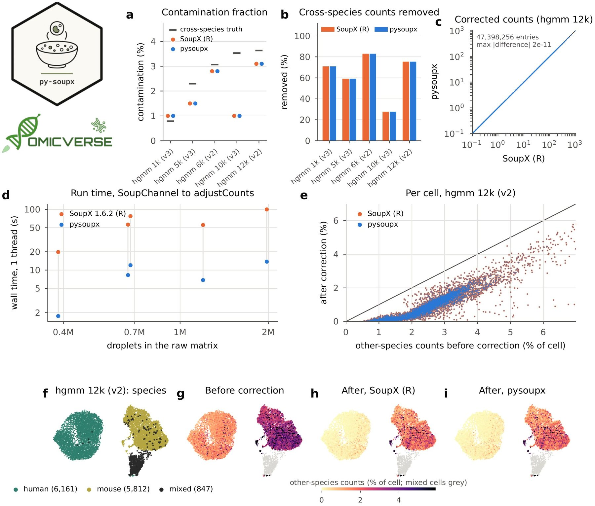

pysoupx: a Python implementation of SoupX for ambient RNA removal in single-cell RNA-seq data
Affiliations
- 1 Department of Genetics, Stanford University, Stanford, CA 94305, USA
- 2 OmicVerse, Inc., San Francisco, CA 94114, USA
- 3 Hubei Key Laboratory of Agricultural Bioinformatics, College of Informatics, Huazhong Agricultural University, Wuhan 430070, China
OmicVerse Technical Reports (2026)Cite this article
Download PDFAbstract
We present pysoupx, a Python implementation of SoupX for removing ambient RNA contamination from droplet-based single-cell RNA-seq data, covering the estimation of the ambient (soup) profile from empty droplets, the automatic and gene-set-based estimation of the contamination fraction, and the three methods for subtracting ambient counts. pysoupx follows SoupX's code paths step by step and is versioned against a specific SoupX release; its optional stochastic rounding uses R's random number generator. On five human–mouse mixtures from 10x Genomics (37,494 cells, up to 1.98 million droplets), in which counts from the other species reveal the ambient RNA, pysoupx estimated the same contamination fractions as SoupX 1.6.2 with the same marker genes, returned corrected counts that differ from SoupX's by at most 2 × 10⁻¹¹, and removed the same cross-species counts, while running 6.4–11.3 times faster on one thread. pysoupx is used by OmicVerse for ambient RNA removal and is released at https://github.com/omicverse/py-soupx and on PyPI.
- SoupX
- ambient RNA
- contamination
- single-cell RNA-seq
- quality control
- Python
- reproducibility
Introduction
Droplet-based single-cell RNA sequencing captures, together with each cell, cell-free RNA from the suspension. These ambient transcripts add counts of genes a cell does not express, blur cell-type markers and can mislead clustering and differential expression, so the removal of ambient RNA is a routine quality-control step1,2. SoupX3 estimates the ambient (soup) expression profile from empty droplets, estimates the fraction of each cell's counts that come from the soup, and subtracts the expected ambient counts gene by gene. Other methods model the contamination differently, such as DecontX4 and CellBender5; the three have been compared on mouse kidney data in which counts from a second genotype reveal the background noise2.
Single-cell analysis is increasingly done in Python. Workflows are built on scanpy and the scverse ecosystem6,7, and OmicVerse8 brings bulk, single-cell and spatial analyses together in one Python framework. SoupX, however, is available only in R.
Python users currently reach SoupX through rpy29. This requires a parallel R installation, converts the raw droplet matrix, which has hundreds of thousands to millions of columns, between the two languages, and exposes SoupX's options only through the binding layer. A native implementation removes all three costs, as PyDESeq210 has shown for DESeq211 and pyedger12 for edgeR13. We set the same target for pysoupx: an ambient-RNA correction in Python should return the same corrected counts as the same correction in R.
Here we present pysoupx, a Python implementation of SoupX that is versioned against a specific SoupX release. We describe its implementation and compare it with SoupX 1.6.2 on five human–mouse mixtures from 10x Genomics, in which the ambient RNA can be measured directly.
Implementation
Method
SoupX takes the raw matrix of all droplets and the matrix of the droplets called as cells3. The soup profile is the share of each gene in the counts of droplets with fewer than 100 molecules, which are taken to be empty. The contamination fraction, the share of a cell's counts that come from the soup, can be estimated from genes that some cells cannot express: in a cell that does not express them, all their counts are soup. The automatic estimate selects cluster marker genes by term frequency–inverse document frequency (tf-idf) and keeps those abundant in the soup. A Poisson test finds the clusters in which each marker is not expressed, and the resulting per-cluster estimates are combined into a posterior distribution with a gamma prior, whose mode is the contamination fraction. Finally, the expected number of soup counts of each cell is removed. The counts are summed per cluster, the soup counts are removed in proportion to the soup profile without taking more than was observed, and the removed counts are distributed back to the cells of the cluster. Two other removal methods are available, one that removes only genes that are confidently soup and one that finds the most likely soup counts under a multinomial model, and the result can be rounded stochastically to integers3.
Features and code structure
pysoupx 0.1.1 implements SoupX 1.6.2 (Table 1): the SoupChannel object and the soup profile, the contamination fraction, estimated automatically with autoEstCont, from gene sets given by the user or set by hand, and adjustCounts with its three methods and optional rounding. Matrices are genes × droplets and genes × cells, as in SoupX; SoupChannel.from_anndata builds a channel from AnnData objects14 and load_10x from a Cell Ranger output folder. pysoupx builds on NumPy15, SciPy16 and pandas17 and runs on one thread.
| SoupX 1.6.2 | pysoupx | Agreement on the benchmark data |
|---|---|---|
| SoupChannel, estimateSoup | SoupChannel, estimate_soup | identical soup profile |
| quickMarkers, autoEstCont | quick_markers, auto_est_cont | same marker genes and contamination fraction |
| estimateNonExpressingCells, calculateContaminationFraction | estimate_non_expressing_cells, calculate_contamination_fraction | same cells and contamination fraction |
| adjustCounts (subtraction) | adjust_counts | corrected counts, absolute difference at most $2 \times 10^{-11}$ |
| adjustCounts (soupOnly, multinomial) | adjust_counts | same corrected counts |
| adjustCounts (roundToInt) | adjust_counts(round_to_int=True, seed) | same integers for the same seed |
Numerical parity with SoupX
pysoupx ports SoupX's code paths step by step. These include the tf-idf statistics and hypergeometric q-values of quickMarkers, computed with a port of R's hypergeometric tail, and the order of tied markers, which follows R's stable sorting. They also include the Poisson tests and the prior of autoEstCont, and the capped allocation of soup counts that adjustCounts uses within clusters and when distributing them back to cells. The allocation is solved for all clusters and genes at once, which keeps the cluster-level correction fast on large matrices. The stochastic rounding draws from a port of R's Mersenne-Twister generator18 and of its Bernoulli sampler, so the same seed gives the same integers as SoupX after set.seed. The steps are tested against SoupX 1.6.2 (25 tests, of which 7 run R and 2 use stored R values). pysoupx versions follow SoupX releases (0.1.x tracks SoupX 1.6.2).
Use in OmicVerse
pysoupx is the SoupX backend of OmicVerse8 ambient-RNA removal. With method='soupx', ov.pp.ambient.remove_ambient builds the channel from a filtered AnnData and its raw droplet matrix (raw=) and, given cluster labels (cluster_key=), estimates the contamination fraction with autoEstCont. It then replaces the counts with the corrected counts, keeps the original counts in a layer and records each cell's contamination fraction in adata.obs.
Comparison with SoupX on human–mouse mixtures
Data and design
We used five mixtures of human and mouse cells from 10x Genomics19: hgmm 1k, 5k and 10k with v3 chemistry, and 6k and 12k with v2. Each comes with its raw droplet matrix (0.38 to 1.98 million droplets with counts) and Cell Ranger's cell calls (1,046 to 12,820 cells, 37,494 in total). Cells with at least 90% of counts from human genes were labelled human, those with at most 10% were labelled mouse, and the others mixed. In a human cell, counts of mouse genes can only come from ambient RNA, and the reverse holds for mouse cells; their number relative to that expected from the soup profile gives a ground-truth contamination fraction for each mixture (Supplementary methods). Both packages ran SoupX's default workflow, SoupChannel, setClusters, autoEstCont and adjustCounts, with one clustering of the cells (Leiden20 on scanpy's default processing) given to both. We compared the contamination fractions, the corrected counts, the removal of cross-species counts and run time.
Contamination fraction and corrected counts
pysoupx estimated the same contamination fraction as SoupX in all five mixtures, from 1.0 to 3.1%, with the same marker genes (Fig. 1a). The cross-species ground truth ranged from 0.8 to 3.6%. Both packages were close to it in the 1k, 6k and 12k mixtures; in the 5k mixture both estimated 1.5% against 2.3%, and in the 10k mixture both estimated 1.0%, the lower end of the default search range, against 3.5%.
The soup profiles were identical, and the corrected count matrices differed by at most $2 \times 10^{-11}$ in absolute terms, for counts of up to several thousand per gene and cell (Fig. 1c). As a consequence, both packages removed the same share of cross-species counts, between 28 and 83% depending on the estimated contamination fraction, and kept the same 98.2 to 99.4% of the counts from the cell's own species (Fig. 1b, e). In the embedding of hgmm 12k, the correction lowers the other-species share in both human and mouse cells, more completely in human cells, and the corrected values of the two packages are the same in every cell (Fig. 1f–i).

autoEstCont in SoupX (orange) and pysoupx (blue), and the ground truth from cross-species counts (grey marks). (b) Share of cross-species counts in human and mouse cells removed by the correction. (c) Corrected counts of pysoupx against SoupX in hgmm 12k, a random sample of 200,000 nonzero entries; the line is the identity. (d) Wall time from building the channel to the corrected matrix on one thread, the faster of two runs, against the number of droplets in the raw matrix. (e) Share of a cell's counts from the other species before and after correction, for the human and mouse cells of hgmm 12k; SoupX (orange) is drawn under pysoupx (blue). (f–i) UMAP21 of the 12,820 cells of hgmm 12k, computed with scanpy from the counts: (f) species of each cell; (g–i) share of a cell's counts from the other species before correction and after correction by SoupX and by pysoupx (mixed cells grey).Contamination across cells and gene-set estimates
The contamination differed between cells. In every mixture, the cross-species contamination of a cell was higher the fewer counts it had (Spearman correlation −0.87 to −0.73), and mouse cells were more contaminated than human cells, for example 4.5 against 2.9% in hgmm 12k. SoupX corrects all cells of a channel with one contamination fraction, so in hgmm 12k both packages removed 92% of the cross-species counts in human cells and 64% in mouse cells (Fig. 1e–i, Table S1).
When genes that some cells cannot express are known, SoupX can estimate the contamination fraction from them instead of from cluster markers. We gave both packages the five genes of each species most abundant in the soup as genes that cells of the other species do not express. These were MALAT1 and mitochondrial genes, which are 1.4 to 3.0 times more abundant in the soup of empty droplets than in the ambient RNA of cells, and the estimates, 0.6 to 2.8%, were below the truth. Without mitochondrial genes and MALAT1, the estimates were 2.1 to 3.7% (Table S1): 2.2% in hgmm 5k and 3.7% in hgmm 10k, where the ground truth was 2.3 and 3.5% and autoEstCont had estimated 1.5 and 1.0%, but 2.1% against 0.8% in hgmm 1k. In all five mixtures both packages selected the same genes and cells and returned the same estimates (relative difference at most $7 \times 10^{-10}$).
Speed
pysoupx ran the workflow 6.4 to 11.3 times faster than SoupX (median 7.2), both on one thread (Fig. 1d). For hgmm 10k (v3), the mixture with the most droplets, SoupX took 100 s and pysoupx 14 s.
Conclusion and future perspectives
pysoupx brings SoupX to Python with the same results as R. On five human–mouse mixtures it estimates the same contamination fractions as SoupX 1.6.2, returns the same corrected counts to $2 \times 10^{-11}$, and runs several times faster on one thread. Because the stochastic rounding follows R's random numbers, rounded corrections can also be repeated across the two languages. The mixtures also show what to check in either language. An automatic estimate at the edge of its range can be compared with a gene-set estimate that leaves out mitochondrial genes and MALAT1, and cells with few counts carry more ambient RNA than the channel average. Because pysoupx works with AnnData objects and is part of OmicVerse, ambient RNA can be removed in the same Python session as the rest of a single-cell workflow.
Future work includes SoupX's diagnostic plots, such as the marker distribution and change maps, and the use of a reduced-dimension embedding stored with the channel. pysoupx will continue to follow SoupX releases, with each version pinned to the release it reproduces.
Data and code availability
pysoupx is released under the Apache License 2.0 on PyPI (pip install pysoupx) and at https://github.com/omicverse/py-soupx; this report describes version 0.1.1. The benchmark (report/scripts in the repository) reproduces every number and figure in this report. The raw and filtered matrices of the 10x Genomics datasets hgmm_1k_v3, hgmm_5k_v3, hgmm_10k_v3, hgmm_6k and hgmm_12k were obtained from https://www.10xgenomics.com/datasets, accessed on 11 November 2026. Software: pysoupx 0.1.1 (Python 3.10, NumPy 2.2.6, SciPy 1.15.2; scanpy 1.11.5 for the clustering and Fig. 1f–i); SoupX 1.6.2 on R 4.5.3 (conda-forge). Hardware: one node of the Stanford Sherlock cluster (AMD EPYC 9754).
Declaration of generative AI and AI-assisted technologies
The authors used Claude Opus 5.5, GPT-6 Astra, and OmicOS to proofread grammar and syntax, improve readability. Any AI-assisted edits were reviewed by the authors, who take full responsibility for the content of this publication.
Conflicts of interest
Contributors Zehua Zeng and Xu Meng are affiliated with OmicVerse, Inc.
References
- 1.Heumos L, Schaar AC, Lance C, et al. (2023). Best practices for single-cell analysis across modalities. Nature Reviews Genetics 24, 550-572. 10.1038/s41576-023-00586-w
- 2.Janssen P, Kliesmete Z, Vieth B, et al. (2023). The effect of background noise and its removal on the analysis of single-cell expression data. Genome Biology 24, 140. 10.1186/s13059-023-02978-x
- 3.Young MD, Behjati S (2020). SoupX removes ambient RNA contamination from droplet-based single-cell RNA sequencing data. GigaScience 9, giaa151. 10.1093/gigascience/giaa151
- 4.Yang S, Corbett SE, Koga Y, et al. (2020). Decontamination of ambient RNA in single-cell RNA-seq with DecontX. Genome Biology 21, 57. 10.1186/s13059-020-1950-6
- 5.Fleming SJ, Chaffin MD, Arduini A, et al. (2023). Unsupervised removal of systematic background noise from droplet-based single-cell experiments using CellBender. Nature Methods 20, 1323-1335. 10.1038/s41592-023-01943-7
- 6.Wolf FA, Angerer P, Theis FJ (2018). SCANPY: large-scale single-cell gene expression data analysis. Genome Biology 19, 15. 10.1186/s13059-017-1382-0
- 7.Virshup I, Bredikhin D, Heumos L, et al. (2023). The scverse project provides a computational ecosystem for single-cell omics data analysis. Nature Biotechnology 41, 604-606. 10.1038/s41587-023-01733-8
- 8.Zeng Z, Ma Y, Hu L, et al. (2024). OmicVerse: a framework for bridging and deepening insights across bulk and single-cell sequencing. Nature Communications 15, 5983. 10.1038/s41467-024-50194-3
- 9.Gautier L. rpy2: Python interface to the R language. https://rpy2.github.io
- 10.Muzellec B, Teleńczuk M, Cabeli V, Andreux M (2023). PyDESeq2: a python package for bulk RNA-seq differential expression analysis. Bioinformatics 39, btad547. 10.1093/bioinformatics/btad547
- 11.Love MI, Huber W, Anders S (2014). Moderated estimation of fold change and dispersion for RNA-seq data with DESeq2. Genome Biology 15, 550. 10.1186/s13059-014-0550-8
- 12.Zeng Z, Meng X (2026). pyedger: a Python implementation of edgeR for differential expression analysis. Preprints.org. 10.20944/preprints202611.1133.v1
- 13.Robinson MD, McCarthy DJ, Smyth GK (2010). edgeR: a Bioconductor package for differential expression analysis of digital gene expression data. Bioinformatics 26, 139-140. 10.1093/bioinformatics/btp616
- 14.Virshup I, Rybakov S, Theis FJ, Angerer P, Wolf FA (2024). anndata: access and store annotated data matrices. Journal of Open Source Software 9, 4371. 10.21105/joss.04371
- 15.Harris CR, Millman KJ, van der Walt SJ, et al. (2020). Array programming with NumPy. Nature 585, 357-362. 10.1038/s41586-020-2649-2
- 16.Virtanen P, Gommers R, Oliphant TE, et al. (2020). SciPy 1.0: fundamental algorithms for scientific computing in Python. Nature Methods 17, 261-272. 10.1038/s41592-019-0686-2
- 17.McKinney W (2010). Data structures for statistical computing in Python. Proceedings of the 9th Python in Science Conference, 56-61. 10.25080/Majora-92bf1922-00a
- 18.Matsumoto M, Nishimura T (1998). Mersenne twister: a 623-dimensionally equidistributed uniform pseudo-random number generator. ACM Transactions on Modeling and Computer Simulation 8, 3-30. 10.1145/272991.272995
- 19.Zheng GXY, Terry JM, Belgrader P, et al. (2017). Massively parallel digital transcriptional profiling of single cells. Nature Communications 8, 14049. 10.1038/ncomms14049
- 20.Traag VA, Waltman L, van Eck NJ (2019). From Louvain to Leiden: guaranteeing well-connected communities. Scientific Reports 9, 5233. 10.1038/s41598-019-41695-z
- 21.Becht E, McInnes L, Healy J, et al. (2019). Dimensionality reduction for visualizing single-cell data using UMAP. Nature Biotechnology 37, 38-44. 10.1038/nbt.4314
Supplementary information
Supplementary methods
Data. For each mixture, the raw matrix was restricted to droplets with at least one count, and the cells were Cell Ranger's cell calls (for the v2 datasets, the union of the cells called with the human and with the mouse reference). Genes were assigned to the human or mouse genome by their reference. Cells were clustered once, with scanpy: counts normalised to 10,000 per cell and log-transformed, 2,000 variable genes, 30 principal components, a 15-nearest-neighbour graph and Leiden clustering at resolution 1 (11 to 15 clusters). The same raw matrix, cells and clusters were given to both packages.
Runs. In R: SoupChannel(tod, toc), setClusters, autoEstCont(doPlot = FALSE) and adjustCounts with default arguments. In Python: SoupChannel(tod, toc, ...), set_clusters, auto_est_cont and adjust_counts with default arguments.
Ground truth. For the human and mouse cells of a mixture, the cross-species counts (mouse-gene counts in human cells and human-gene counts in mouse cells) were divided by the counts expected if every cell had a contamination fraction of one, that is the cell's total counts times the share of the other species' genes in the soup profile; the ratio of the sums is the ground-truth contamination fraction. Ambient RNA from the cell's own species cannot be told apart from its own expression, so the share of cross-species counts removed and the share of own-species counts kept describe the correction.
Embedding (Fig. 1f–i). The cells of hgmm 12k were embedded with the same scanpy processing as for the clustering, followed by UMAP; the embedding is for display only.
Gene-set estimates. For each mixture and species, the five genes most abundant in the soup profile, either among all genes of the species or after leaving out mitochondrial genes and MALAT1, were given as a gene set that cells of the other species do not express. estimateNonExpressingCells with the clusters selected the cells used for the estimate, and calculateContaminationFraction returned one contamination fraction per mixture (report/scripts/06_geneset). The over-representation of the first gene sets is their share of the species' soup counts divided by their share of the species' counts in cells of the other species.
Run time. Run times are wall-clock times from building the channel to the corrected matrix, without reading and writing files. Every run was pinned to its own idle processor core with BLAS and OpenMP limited to one thread; R and Python runs alternated over 10 cores of one node, so that both packages were timed under the same load. Each package ran twice per mixture, and the faster run is reported.
Other methods. On hgmm 1k with a contamination fraction of 5%, the soupOnly and multinomial methods of pysoupx returned the corrected counts of SoupX, the gene-set estimate from mouse genes returned the same cells and contamination fraction, and stochastic rounding with the same seed returned the same integers.
Notes for users coming from R
- Versions. pysoupx 0.1.x tracks SoupX 1.6.2, including its defaults (soup from droplets with fewer than 100 counts, contamination range 1% to 80%, prior 5%).
- Input.
SoupChannel(tod, toc, genes=..., cells=..., droplets=...)takes genes × droplets and genes × cells matrices, asSoupChannel(tod, toc)in R;SoupChannel.from_anndata(filtered, raw=raw)takes cells × genes AnnData objects. - Seeds.
adjust_counts(round_to_int=True, seed=s)gives the same integers asset.seed(s); adjustCounts(sc, roundToInt = TRUE). - Clusters. As in R,
autoEstContneeds clusters, andadjustCountscorrects at the cluster level when they are set. - Checking the contamination fraction. An estimate at the lower end of
contamination_rangeis a reason to estimate the fraction again from genes known not to be expressed in some cells, withestimate_non_expressing_cellsandcalculate_contamination_fraction. Mitochondrial genes and MALAT1 are better left out of such gene sets, because they are over-represented in empty droplets. Cells with few counts carry more ambient RNA than the channel average.
| Mixture | Truth, all (%) | Truth, human cells (%) | Truth, mouse cells (%) | autoEstCont (%) | Gene set, top 5 (%) | Gene set, without MT and MALAT1 (%) | Removed, human cells (%) | Removed, mouse cells (%) |
|---|---|---|---|---|---|---|---|---|
| hgmm 1k (v3) | 0.8 | 0.7 | 0.9 | 1.0 | 0.6 | 2.1 | 68 | 73 |
| hgmm 5k (v3) | 2.3 | 1.7 | 3.0 | 1.5 | 0.8 | 2.2 | 75 | 48 |
| hgmm 6k (v2) | 3.1 | 2.7 | 3.4 | 2.8 | 2.1 | 2.5 | 88 | 79 |
| hgmm 10k (v3) | 3.5 | 2.9 | 4.0 | 1.0 | 1.1 | 3.7 | 33 | 24 |
| hgmm 12k (v2) | 3.6 | 2.9 | 4.5 | 3.1 | 2.8 | 3.2 | 92 | 64 |
Author information
Affiliations
- 1 Department of Genetics, Stanford University, Stanford, CA 94305, USA
- 2 OmicVerse, Inc., San Francisco, CA 94114, USA
- 3 Hubei Key Laboratory of Agricultural Bioinformatics, College of Informatics, Huazhong Agricultural University, Wuhan 430070, China
Correspondence
Correspondence to OmicVerse Team (contact@omicos.cn).
Contributors
OmicVerse Team members who contributed to this report: Zehua Zeng1,2, Xu Meng2,3.
Cite this article
OmicVerse Team. pysoupx: a Python implementation of SoupX for ambient RNA removal in single-cell RNA-seq data. OmicVerse Technical Reports (2026). https://omicverse.org/articles/pysoupx
@techreport{omicverseteam2026pysoupx,
title = {pysoupx: a Python implementation of SoupX for ambient RNA removal in single-cell RNA-seq data},
author = {{OmicVerse Team}},
institution = {OmicVerse},
type = {Technical Report},
year = {2026},
url = {https://omicverse.org/articles/pysoupx}
}